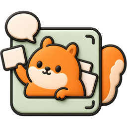

Toskr散在各处的，一次送达。
Scattered everywhere, delivered at once.
把文字、截图和剪贴板收进一个小面板，排好顺序、查过隐私，按一次 ⌘⏎ 送到你的 AI 应用
Collect text, screenshots and clipboard in one small panel, order them, check privacy, then press ⌘⏎ to send to your AI apps
AI 消息中转站
A relay station for your AI messages
从各个应用收集文字与图片，整理、组合并检查隐私，再粘贴到 AI 输入框
Collect text and images from any app, arrange them, check privacy, then paste into the AI input
线上报错：日志发到 ops@example.com，机器 10.2.3.18，先回滚再排查。
Production error: logs go to ops@example.com, host 10.2.3.18. Roll back first.
请先指出这段代码里会越界的地方，再给出最小改动的修复。
Point out where this code can go out of range, then give the smallest fix.
func (q *Queue) pick(i int) Card {
if i >= len(q.cards) {
return Card{}
}
panic: runtime error: index out of range [3] with length 3
线上报错：日志发到 [邮箱]，机器 [IP]，先回滚再排查。
Production error: logs go to [email], host [IP]. Roll back first, then investigate.
请先指出这段代码里会越界的地方，再给出最小改动的修复，不要重写整个函数。
Point out where this code can go out of range, then give the smallest fix. Do not rewrite the whole function.
func (q *Queue) pick(i int) Card {
if i >= len(q.cards) {
return Card{}
}
return q.cards[i]
}
散在各处的，
一次送达。
Scattered everywhere,
delivered at once.
AI 消息中转站：收进一个小面板，
排好顺序、查过隐私，一次送到 AI 输入框
A relay station for your AI messages:
collect, order, check privacy, send at once